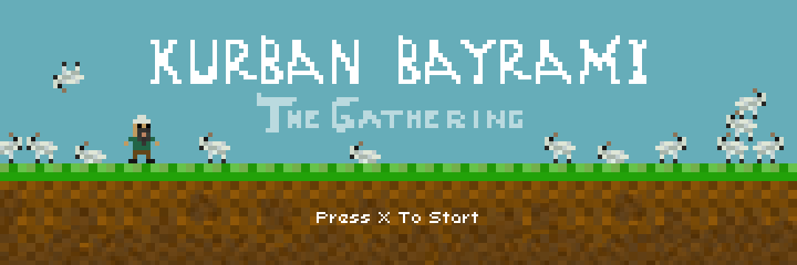
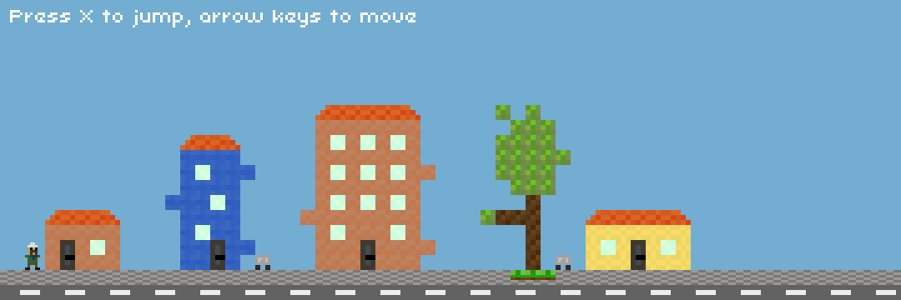
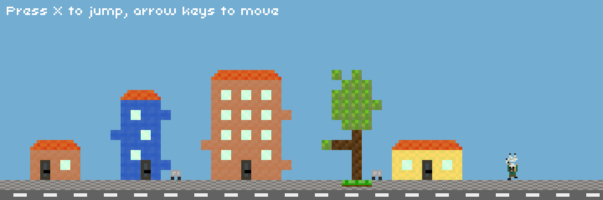
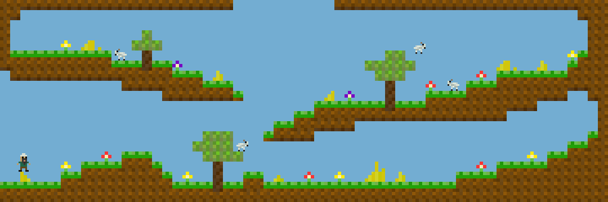
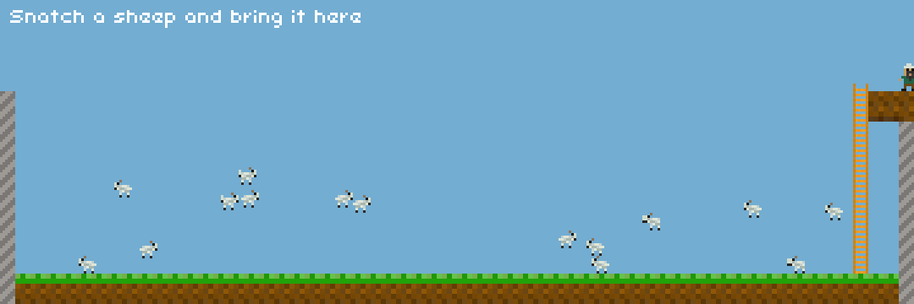

About
Kurban Bayrami is coming, and the pit wants sheep.
You play a haci, a pilgrim, in a small town. Sheep wander the fields to the east. The pit waits at the far west end of town. Catch a sheep, carry it over your head through the streets, and toss it into the pit. Then go back for another.
There is no end and no score screen. Bring as many sheep as you like, until you get bored. Every sheep you deliver stays in the pit, so the pile grows each time you come back. Each screen greets you with a line of advice at the top. Most of it is useful. Some of it is not.
The original page said "Game is incomplete." That is still true, and that is part of the charm.
Aim of the game
Carry sheep from the fields to the pit, as many as you can.
How to play
- Press X on the title screen to start in town.
- Walk right, past the houses, into the fields where the sheep live.
- Stand next to a sheep and hold C. The haci lifts it over his head.
- Keep holding C and walk left, back through town, to the pit at the far left.
- Let go of C over the pit. The sheep drops in and counts.
- Climb out of the pit on the ladder, and go get another sheep.
- Buildings are solid. Jump onto the rooftops, or jump over them.
- Press X again in mid-air while moving, for a backflip. You rarely need it. It looks good.
- If you let go of C in town, the sheep wanders off. It does not know where the pit is.
Controls
On a touch screen, the buttons under the game stand in for these keys.
- ← →
- Walk
- X
- Jump. Press it again in the air while moving to backflip.
- Hold C
- Pick up the sheep next to you and carry it
- Release C
- Drop the sheep
- ↑ ↓
- Climb the ladder in the pit
Screenshots





History
I made Kurban Bayrami: The Gathering in August 2011, as a small Flash game. It is written in ActionScript 3 with the Flixel 2.35 game library, in a FlashDevelop project. It was my warm-up game for Ludum Dare 21.
The build was compiled with the Flex SDK 4.5 on 18 August 2011, the day before Ludum Dare 21 began. The maps were drawn in the Tiled map editor. The title animation uses TweenMax.
How it was ported
Flash Player is gone from every browser, and the original source code was lost. Only the compiled SWF file survived.
In October 2026 the SWF was decompiled with JPEXS Free Flash Decompiler, to read the game logic and extract the art. The game was then rewritten by hand in plain C, with readable names and comments. It is not a translation of decompiled code.
The port uses raylib 6.0 for drawing and input. A small Flixel-style layer in C copies Flixel's movement maths, so the haci and the sheep move and jump exactly as they did in 2011. The original Tiled maps load unchanged.
The web version is compiled to WebAssembly with Emscripten. The same code also builds for macOS, Windows and Linux.
The port was written with Claude Code, Anthropic's coding agent, running the Claude Opus 5.5 model.